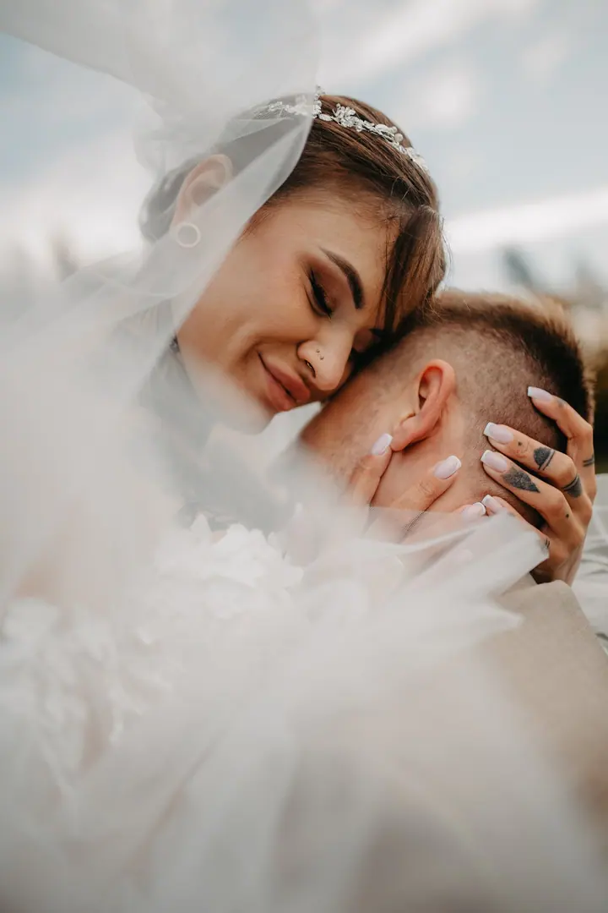
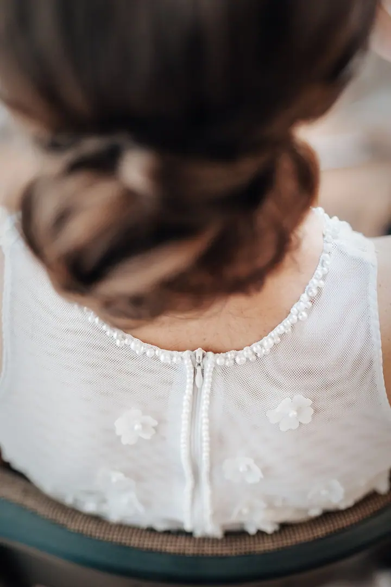

jedna
Svatby
Celý váš den od příprav nevěsty až po večerní procházku v zapadajícím slunci. Fotím přirozeně, s hravostí a v detailech, aby fotky vyprávěly váš příběh.

Svatební a rodinný fotograf · Frýdek-Místek

Jmenuji se Oldřich Hadvičák a pod značkou Allin Foto fotím svatby, páry a rodiny se všemi jejich velkými chvílemi, od těhotenství až po první dny miminka. Fotím přirozeně, s hravostí a nejraději v detailech.
Více o mně
Co fotím
jedna
Celý váš den od příprav nevěsty až po večerní procházku v zapadajícím slunci. Fotím přirozeně, s hravostí a v detailech, aby fotky vyprávěly váš příběh.
Focení jen pro vás dva, venku a ve světle, které vám sedí. Hodí se před svatbou, k výročí nebo jen tak pro radost.
Čekání na miminko a jeho první dny. Novorozence fotím v ateliéru i u vás doma, jemně v bílé nebo v boho stylu.
Společné chvíle celé rodiny venku, mezi slunečnicemi, ve večerním světle nebo při malování. K tomu každý rok i vánoční focení.
Emoce, vzpomínky a šťastné okamžiky vašich životů


Za objektivem
Emoce, vzpomínky a šťastné okamžiky. To je to, co mě na focení naplňuje a baví. Snažím se, aby fotky nebyly jen hezké, ale aby odvyprávěly váš příběh tak, jak jste ho prožili.
Nejvíc fotím svatby, od ranních příprav nevěsty přes obřad až po procházku ve večerním světle. Kromě toho fotím páry, těhotenství, novorozence v ateliéru i doma, rodiny a každý rok také vánoční focení.
Nehraju si na velké pózování. Jsem tady pro vás, nechávám prostor vaší radosti a hlídám drobnosti, které by se jinak ztratily. Věřím, že vaše vzpomínky budou díky Allin Foto i vaší radostí.
Oldřich
Napište mi nebo zavolejte, jaké focení si představujete a kdy. Ověřím termín a domluvíme se na dalším postupu.
Probereme, co je pro vás důležité, jaká místa máte rádi a jak má den nebo focení vypadat.
Jsem tam pro vás, nenápadně a v klidu. Fotím přirozeně a nechávám prostor vašim emocím.
Fotky pečlivě vyberu a upravím tak, aby spolu ladily a vyprávěly celý váš příběh.
Portfolio
Otázky
Hlavně svatby, ale také páry, těhotenské a newborn focení, rodiny a vánoční focení.
Miminka fotím v ateliéru nebo u vás doma, podle toho, co vám bude příjemnější.
Fotíme venku, třeba mezi slunečnicemi nebo ve večerním světle, ale klidně i při společném malování. Hlavní je, abyste se cítili sami sebou.
Cena se odvíjí od typu focení a rozsahu. Napište mi, co plánujete, a pošlu vám nabídku na míru.

Napište pár vět o tom, co si představujete. · +420 736 426 409